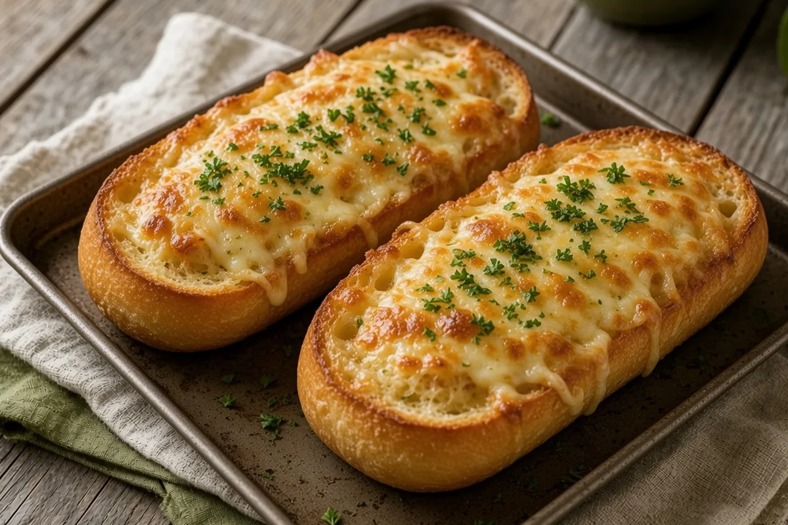

Cheesy Garlic Bread
A split loaf baked under foil so the garlic butter soaks in without burning the edges, then uncovered with mozzarella and Parmesan until the cheese is melted and golden.

Adapted from Cooking Classy
10 servings
By
Yield: 10 servings
Prep:
Cook:
Total:
Difficulty: Easy
Gear: Rimmed baking sheet, foil, mixing bowl, fork
Ingredients
- 1 (14 oz) loaf French or Italian bread
- 1/4 cup salted butter, softened
- 2 Tbsp olive oil, not extra virgin
- 1 Tbsp garlic, minced, or 1 tsp granulated garlic
- salt and black pepper, to taste, freshly ground
- 1 1/4 cups mozzarella cheese, shredded
- 1/3 cup Parmesan cheese, shredded
- 1 Tbsp fresh parsley, chopped
Instructions
- Heat the oven to 400°F. Split the loaf in half lengthwise and set the halves cut side up on a rimmed baking sheet lined with two overlapping 24-inch sheets of foil.
- In a bowl, mash the softened butter, olive oil, garlic, salt, and black pepper with a fork until combined. Spread the mixture over both cut faces, all the way to the edges so they do not scorch. Wrap the foil up and over the bread, crimp the edges, and bake until the butter has melted into the crumb, 10 minutes.
- Open the foil and roll it back. Sprinkle the mozzarella and Parmesan evenly over the bread and bake uncovered until the cheese is melted and bubbling, 5 to 6 minutes (broil 1 to 2 minutes at the end if you want a deeper gold—no need to move the rack). Sprinkle with the parsley, slice, and serve warm.
Notes: Use regular olive oil, not extra virgin; the milder oil lets the garlic and cheese lead. Keep a close eye if you broil at the end, since the cheese can go from golden to scorched in seconds. Serve warm, alongside the lasagna soup or any pasta night.